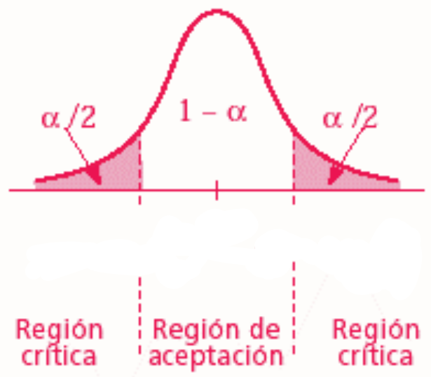

1. Prueba estadística para la diferencia de medias (T-test)
1.1. En R
Test de una media:
El objetivo de este tipo de test es comprobar si la media poblacional de una variable se corresponde con una determinada cifra.
t.test(datos$variable, mu =5, conf.level =0.99)
mu = número es donde se indica el valor de la media para el cual se quiere comprobar si la media poblacional es significativamente distinta. Es decir, si se quiere comprobar si la media es igual a 5, se escribirá mu = 5.
conf.level sirve para establecer un intervalo de confianza específico. Si no se añade esta opción, el intervalo será al 95%.
t.test(datos$ideol, mu=5.5)
One Sample t-test
data: datos$ideol
t = -43.622, df = 28265, p-value < 2.2e-16
alternative hypothesis: true mean is not equal to 5.5
95 percent confidence interval:
4.785116 4.846597
sample estimates:
mean of x
4.815857
En este caso, se puede decir que al 95% de confianza la media ideológica de la población es distinta de 5.5 (en una escala del 1 al 10). Se sabe por tres motivos:
El p-value es < de 0,05
El valor de t < -1,96
En el intervalo de confianza no se incluye el 5.5
La explicación del por qué está en el apartado de la teoría
Test de proporciones: para variables dicotómicas.
Lo que se intenta con este tipo de test no es comprobar si una determinada cifra se incluye dentro de la media poblacional, sino si una variable alcanza un determinado porcentaje.
P.ej., para saber si el PP puede alcanzar un 35% de los votos, se crea una variable dicotómica donde 0 es no votarlo y 1 sí. Después, se hace un ttest como el anterior, pero en el mu se especifica el porcentaje que se quiere comprobar si se alcanza (0.35 en este caso).
t.test(datos$intvoto_pp, mu=0.35)
One Sample t-test
data: datos$intvoto_pp
t = -8.4891, df = 23428, p-value < 2.2e-16
alternative hypothesis: true mean is not equal to 0.35
95 percent confidence interval:
0.3180496 0.3300361
sample estimates:
mean of x
0.3240429
Los resultados se interpretan igual que en el test de una media.
Test de dos medias
La hipótesis nula en este tipo de prueba es que las dos medias son iguales y la hipótesis alternativa es que no lo son.
t.test(datos$var1 ~ datos$var2)
var2 es la variable dicotómica que divide a la muestra en los dos grupos de interés, para los cuales se tratará de averiguar si la media de la
var1 (variable numérica) es igual en ambos o no.
t.test(datos$ideol ~ datos$hombre)
Welch Two Sample t-test
data: datos$ideol by datos$hombre
t = -3.7778, df = 27496, p-value = 0.0001586
alternative hypothesis: true difference in means between group Mujer and group Hombre is not equal to 0
95 percent confidence interval:
-0.1806671 -0.0572345
sample estimates:
mean in group Mujer mean in group Hombre
4.754256 4.873207
Los resultados indican que la media de ideología de las mujeres en la muestra es 4.75 y la de los hombres 4.87. Esta diferencia es suficiente para rechazar la Ho, es decir, no existen diferencias significativas en la ideología en función del género.
Comparación de medias para dos variables numéricas
Si son muestras independientes:
t.test(datos$variable1, datos$variable2)
En el caso de muestras dependientes, el comando es el siguiente:
Paired t-test
data: datos$prop_vox and datos$prop_pp
t = -69.828, df = 28775, p-value < 2.2e-16
alternative hypothesis: true mean difference is not equal to 0
95 percent confidence interval:
-1.652107 -1.561891
sample estimates:
mean difference
-1.606999
Cálculo manual de los intervalos de confianza:
La fórmula de los intervalos es: media muestral ± valor crírico (σ)*error estandar
Para calcular el error, se utiliza el comando std.errorde la librería plotrix:
std.error(datos$variable)
En el ejemplo usado en el test de una media, el error se calcularía del siguiete modo:
std.error(datos$ideol)
[1] 0.01568334
El error estándar es 0.016. De acuerdo con esto, al 95% los intervalos serían:
A la hora de iterpretar los resultados de una prueba estadística, podemos fijarnos en tres cuestiones (relacionadas entre sí): el valor crítico, el nivel de significatividad o alpha y el intervalo de confianza.
Nivel de confianza: es la probabilidad de que el parámetro a estimar se encuentre en el intervalo de confianza.
Alpha: es la probabilidad de quedarse fuera de ese intervalo (en términos sustantivos, la probabilidad de rechazar la hipótesis nula cuando es cierta.
Valor crítico: indica el número de desviaciones estándar que cubren el área bajo la curva para un determinado nivel de confianza. Por ejemplo, para un IC del 95%, este valor crítico indica los límites dentro de los cuales se encuentra el 95% de las observaciones en una distribución normal. Establece donde empieza y dónde termina la zona de rechazo de la hipótesis.
Nivel de confianza
Alpha
Valor crítico
95%
5 - 2,5%
1,96
99%
1 - 0,5%
2,57
99,9%
0,1 - 0,05%
3,27

Intervalos de confianza
El intervalo de confianza indica, para un determiando nivel de confianza, el rango en el que se moverá la media real de un determinado rasgo para el universo estudiado, mientras que la media que se puede calcular a partir de una muestra indica únicamente el valor medio del rasgo de esa muestra. Es decir, si tomamos un intervalo de confianza del 95%, en el 95% de ocasiones la media real del universo de estudio se moverá entre los límites establecidos por el intervalo de confianza. Se emplean estos intervalos ya que la única forma de conocer el valor medio real de un determinado rasgo de una población completa es mediante un censo en el que se incluya a toda esa población, pero es imposible de conocer de forma exacta tomando solo una muestra poblacional.
Por ejemplo, si para la media idológica tenemos un intervalo que va del 4,5 al 5 para un nivel de confianza del 95%, lo que quiere decir es que, en el caso de realizar 100 encuestas independientes a una población, en 95 de estas encuestas la media muestral tendrá un valor situado entre el 4,5 y el 5, y en otros 5 caso será superior o inferior a estas cifras.